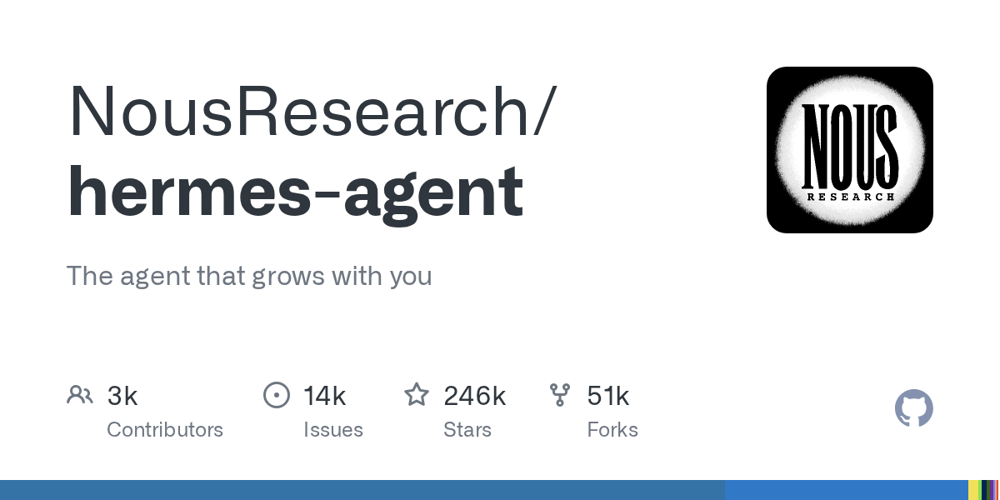

04 GitHub
NousResearch/hermes-agent
메신저와 서버를 넘나드는 학습형 에이전트
★ 245,870이번 주 +2,089PythonMIT 사내 사용 가능릴리스 v2026.9.14 (09.14)최근 활동 09.16테스트 있음예제 없음AGENTS.md 있음

에이전트가 메신저 답변을 잘하는 것만으로는 업무 자동화가 끝나지 않는다. 이전 기록을 찾아 쓰고, 정해진 시간에 작업을 돌리고, 내 PC 밖에서도 계속 움직여야 한다. Hermes Agent는 이 요구를 한데 묶는다. 개인용 채팅 도구보다 장기 실행형 업무 에이전트에 가깝다.
무엇을 하는 물건인가
Hermes Agent는 이전 작업을 기억하고, 새 기술을 쌓고, 여러 채널에서 같은 대화를 이어 가는 에이전트다. 터미널에서 직접 쓸 수 있고 Telegram, Discord, Slack, WhatsApp, Signal 같은 메신저와도 연결한다. 예약 작업과 하위 에이전트 분리 실행까지 넣어 장시간 업무를 맡길 수 있다. 한 번 답하고 끝나는 상담원이 아니라, 기록을 보며 다음 일을 이어 맡는 운영 담당자에 가깝다.
스펙과 도입 조건
- Python 저장소다.
- Dockerfile을 제공한다.
- Linux, macOS, WSL2, Termux, 네이티브 Windows 설치 경로를 안내한다.
- 설치 과정에서 uv, Python 3.11, Node.js, ripgrep, ffmpeg를 준비한다.
- Windows에서는 Git이 없으면 MinGit을 별도 경로에 설치해 쓴다.
- CLI와 메신저 게이트웨이를 각각 실행할 수 있다.
- 모델 제공자는 Nous Portal, OpenRouter, OpenAI, 사용자 자체 엔드포인트 등으로 바꿔 쓸 수 있다.
- MIT 라이선스를 쓴다.
- 최신 릴리스는 v2026.9.14이며 2026년 9월 14일에 나왔다.
이럴 때 쓰면 좋다
- 야간 배치 점검 결과를 매일 아침 메신저로 받고, 실패 시 같은 채널에서 바로 재지시하고 싶을 때 어울린다.
- 주간 보안 점검이나 백업 확인처럼 정해진 시각에 돌아가는 운영 업무를 자연어로 예약하고 싶을 때 맞다.
- 규정 문서 변경 이력과 과거 대화를 함께 참고해 반복 문의에 답하는 내부 지원 에이전트를 만들 때 쓸 수 있다.
핵심 기능
- 복잡한 작업 뒤에 새 skill을 만들고, 사용 중에도 skill을 개선하는 학습 루프를 넣었다.
- Telegram, Discord, Slack, WhatsApp, Signal, CLI를 단일 게이트웨이 프로세스로 묶는다.
- 내장 cron 스케줄러로 일일 보고서, 야간 백업, 주간 감사 같은 작업을 예약 실행한다.
대안 대비 차별점
이 저장소는 모델 제공자 한 곳에 묶이지 않는다. Nous Portal, OpenRouter, OpenAI, 자체 엔드포인트를 바꿔 쓸 수 있어 잠금 효과가 적다. 메신저 채널과 터미널을 같은 게이트웨이로 묶고, 하위 에이전트 병렬 실행과 예약 작업까지 넣은 점도 차별점이다. 많은 에이전트 도구가 노트북 앞의 대화에 머문다면, Hermes Agent는 원격 서버와 서버리스 환경에서 계속 돌리는 운영 방식에 더 가깝다.
사내 도입 체크
- 외부 API 호출은 선택한 모델 제공자와 도구 게이트웨이에 따라 발생한다.
- Nous Portal을 쓰면 모델, 웹 검색, 이미지 생성, 음성, 클라우드 브라우저를 한 구독으로 묶을 수 있다. 이 경우 외부 서비스 경로를 사전에 검토해야 한다.
- 메신저 연동과 클라우드 실행을 지원하므로 데이터 반출 범위와 보관 위치 확인이 필요하다.
- 유지보수 주체는 Nous Research 조직이다.
- 상용 업무 자동화 비서나 챗봇 플랫폼이 대체할 수 있는 영역이 있다. 다만 이 저장소는 오픈소스와 다중 채널 운영에 무게를 둔다.
주요 용어
원문 정보
제목: NousResearch/hermes-agent
최근 활동: 2026.09.16